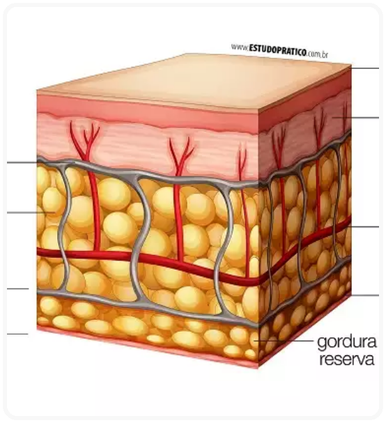

TEGUMENTAR
O sistema tegumentar é composto pela pele e anexos (glândulas, unhas, cabelos, pelos e receptores sensoriais), tem como função agir como barreira, protegendo o corpo da invasão de microrganismos e evitando o ressecamento e perda de água para o meio externo.
